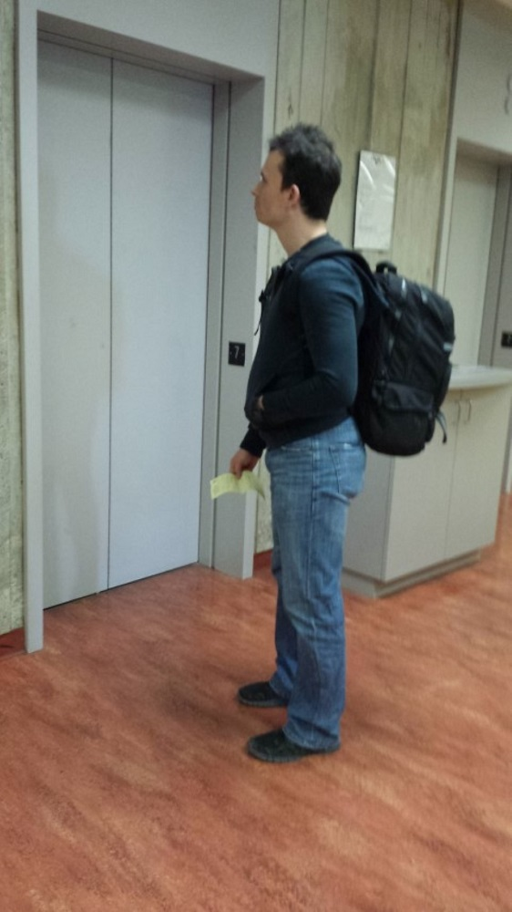

Incident Details:
On Friday 24 May, 2013 Ryerson University Security and Emergency Services were advised that the following had occurred:
A library user advised that the subject had entered the Ryerson Learning Resource Centre 7th floor at approximately 4:30 pm and was walking around at that location. At approximately 4:55 pm he noticed that the subject sat across from a female student, pushed his chair back, and started crawling under the desk. The subject then noticed he was being watched, got up, and left the area.
The library user then left the area and called Security and Emergency Services. He advised that he has seen the man on several occasions over the past three weeks on the 7th floor, and that he was seen engaging in similar behaviour on at least two previous occasions. During the prior occasions, while under the desk, he appeared to be touching the women’s feet through their shoes.
The subject may be focusing this behavior towards young Asian women and may be carrying additional clothing with him to allow him to alter his appearance throughout the day.
Security and Emergency Services attended the area and located the suspect depicted in the photos on the 7th floor. This suspect was subsequently barred from the Ryerson University campus.
A report has been filed with Toronto Police Services.
If you have any information about this incident or have been the victim of a similar incident, please call Security and Emergency Services at 416-979-5040 or via email at security@ryerson.ca. For any incidents in progress use the Emergency "80" number from internal phones. Security & Emergency Services offers 24 hour Safe Walk escorts and free self-defense courses; please check our website for more information at www.ryerson.ca/security.
Support for students impacted by violence is available through Student Development and Counseling (416-979-5195, http://www.ryerson.ca/counselling/).

Suspect information:
Male
Light complexion
5’8” / 1m 73 cm tall
Thin build
Approximately 25-30 years of age
Short dark brown wavy/spiky hair
Wearing a navy blue hoody over a black t-shirt, light blue jeans, black sneakers
Carrying a large square black backpack
Black gloves in the back pocket of his jeans
Overall neat appearance
Notification Information:
If you are a witness to a crime, please call Ryerson Security at 416-979-5040, or Toronto Police Services through Crime Stoppers at 416-222-TIPS (8477).
For Emergencies dial "80" (internal phones only).
To see all Security Incidents, please visit our web site at www.ryerson.ca/security.
H-08-13